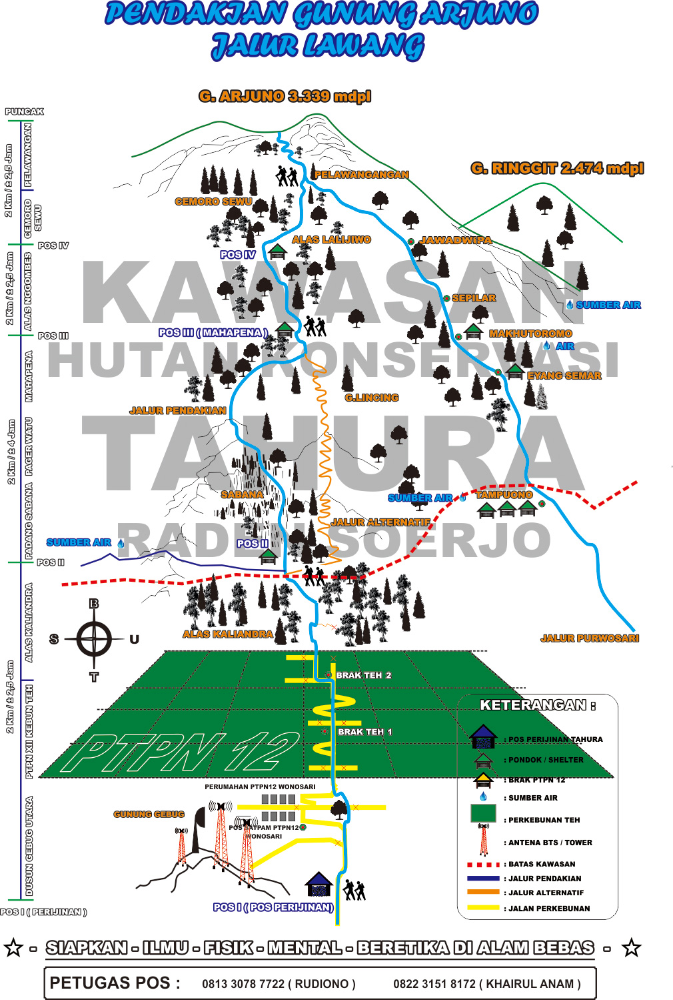
JALUR PENDAKIAN VIA LAWANG
Pendakian Gunung Arjuno via Lawang merupakan pendakian dari sisi sebelah timur yang menyuguhkan pemandangan indah berupa perkebunan teh dan perbukitan di dalam pendakiannya. Rute menuju pos registrasi pendakian Gunung Arjuno via Lawang tidak terlalu sulit. Berikut beberapa rute yang bisa digunakan :
- Dengan kereta api turun di Stasiun Lawang (Malang) - Pasar Lawang - Desa Wonosari. Jika naik bus dari arah Surabaya langsung turun di Pasar Lawang. Bisa ditempuh dengan angkutan umum.
- Dari arah Malang langsung ke Pasar Lawang atau lewat pangkalan ojek pasar lawang atau di gang Tawangsari. Dari pangkalan ojek yang tepat berada di pinggir jalan utama, basecamp tidak terlampau jauh, sekitar 15 menit.
Kontak
- 0812 30787722 (RUDIONO)
- 0822 31518172 (KHAIRUL ANAM)
Basecamp
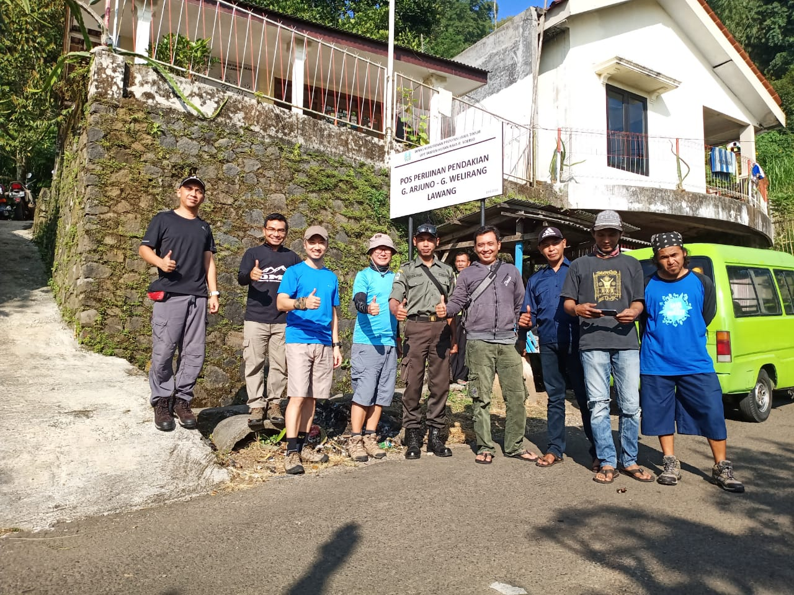
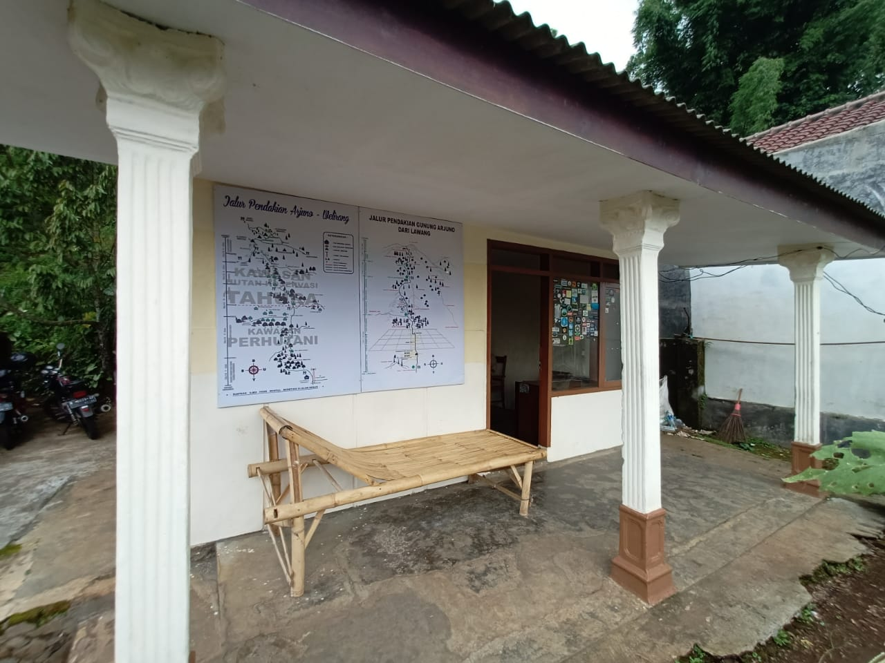
Basecamp - Pos 1 Alang-Alang (1 Jam)
Dari basecamp yang berada di dekat Perkebunan Teh Wonosari, bisa langsung melanjutkan pendakian menyusuri kebun teh dan pepohonan. Jalan masih landai dan teduh. Pos 1 - Alang-alang, ditandai dengan bangunan kayu terbuka yang cukup lebar untuk beristirahat. Pos 1 berada di perbatasan kebun teh dan jalan masuk ke hutan.
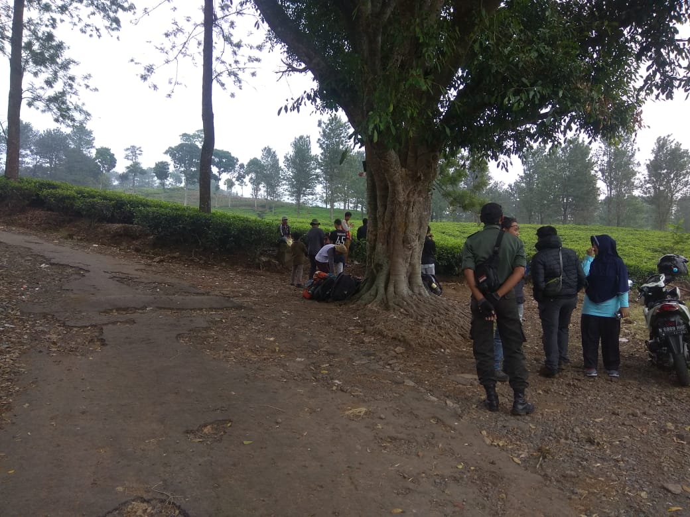
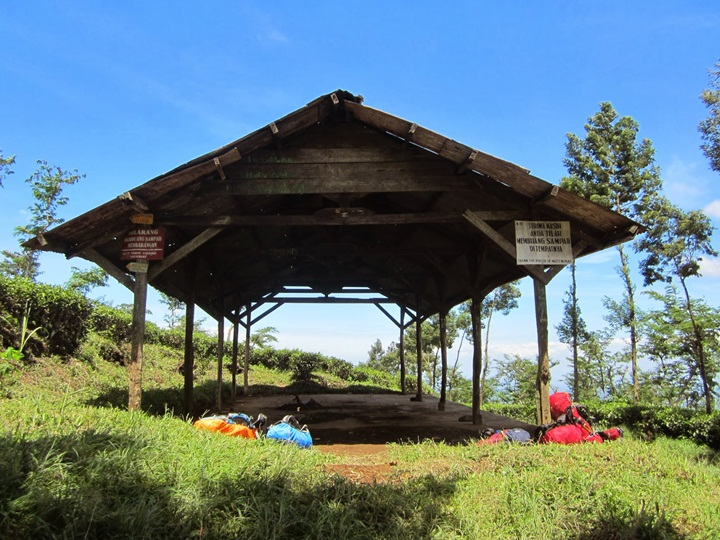
Pos 1 Alang-Alang - Pos 2 Lincing (2 Jam)
Tidak lama selepas Pos 1, jalur pendakian Gunung Arjuno via Lawang mulai menanjak dan masuk perkebunan. Jalan setapak berupa tanah keras yang sempit menyerupai kalimati. Pos 2 - Lincing, ditandai dengan shelter kayu, cukup lebar seperti di Pos 1. Di sebelah kanan shelter ada area luas yang cukup untuk 3 tenda isi 4.
Di sebelah kiri shelter ada sebuah jalan setapak kecil menuju ke sumber air. Jalan setapak ini menanjak melewati bebatuan kemudian menurun ke dasar jurang. Membutuhkan waktu sekitar 15 menit untuk menuju sumber air berupa kolam kecil tersebut.
Di sekitar arah sumber air, ada satu tempat menarik untuk camp, tapi hanya cukup untuk 1 tenda saja. Jika cuaca bagus, melihat perbukitan dan pemandangan kota sambil menyaksikan kembang api tahun baru sangat menarik untuk dicoba. Pemandangan Gunung Semeru juga tampak menjulang di balik perkotaan. Istimewa...
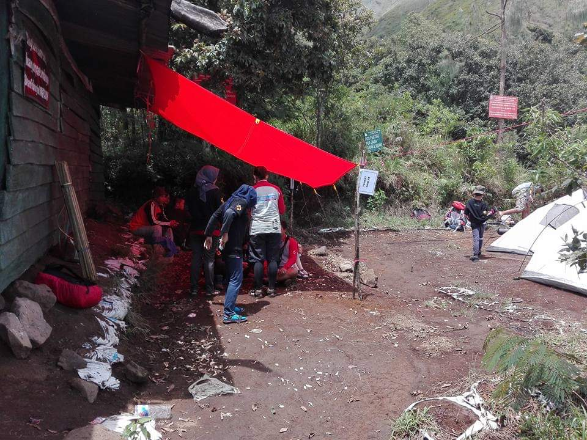
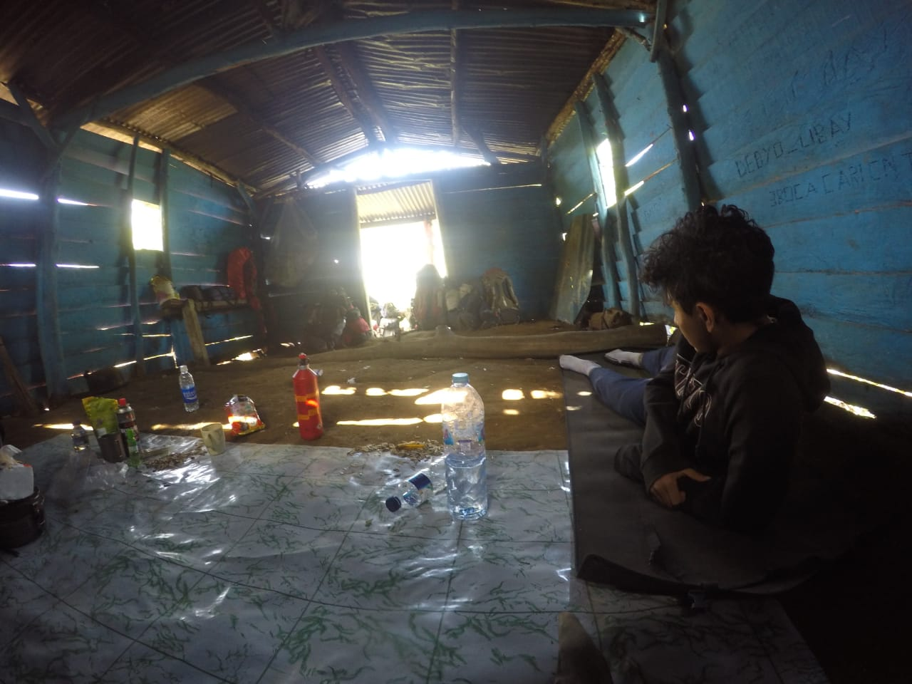
Pos 2 Lincing - Pos 3 Mahapena (3 Jam)
Selepas pos 2, jalur kembali menanjak melewati perbukitan indah yang bisa mengobati rasa lelah sejenak. Melewati perbukitan dan savana luas adalah hal yang mengasyikkan dalam perjalanan dari Pos 2 ke Pos 3.
Ada jalur alternatif dari Pos 2 ke Pos 3, tepatnya di sebelah kanan lahan lapang Pos 2. Jalur setapak yang menurun bisa dicoba bagi yang suka tantangan karena jalurnya lebih ekstrim, lebih menanjak, lebih panjang dan berbatu, sehingga kadang perlu sedikit teknik memanjat.
Adanya beberapa pohon cemara menandai sudah depat dengan Pos 3. Pos 3 - Mahapena, berupa tanah lapang di atas bebatuan. Tidak ada sumber air di Pos 3, tapi jika musim hujan, bisa menemukan air di tampungan bebatuan.
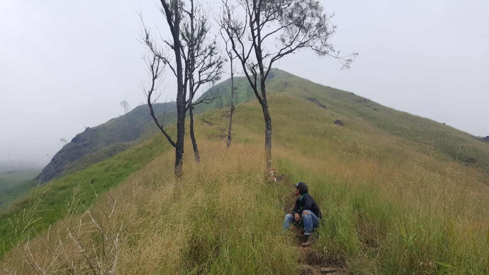
Pos 3 Mahapena - Pos 4 Nggombes (3 Jam 45 Menit)
Ini adalah jalur yang paling melelahkan dan paling menanjak di sepanjang pendakian Gunung Arjuno via Lawang. Trek masih berupa tanah keras di antara pepohonan cemara yang rapat dan tanpa bonus, kecuali berhenti. Pendakian yang panjang ini akan sangat melelahkan karena menuju ke Pos 4 lumayan jauh.
Pos 4 - Nggombes, berupa tanah lapang di bawah pohon cemara. Di area ini bisa mendirikan 6 tenda isi 4 dan merupakan tempat camp luas terakhir yang nyaman di sepanjang pendakian Gunung Arjuno via Lawang dan tidak ada sumber air.
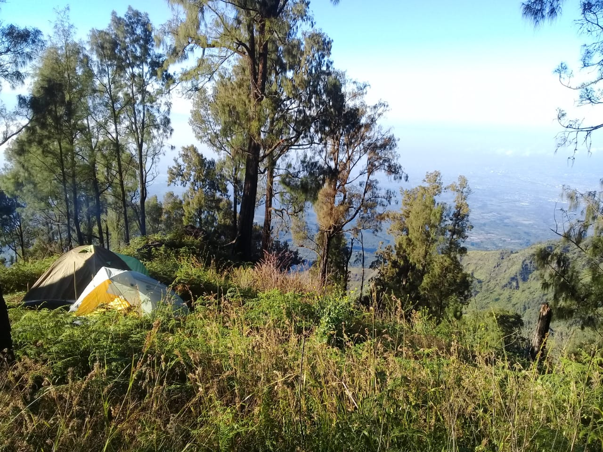
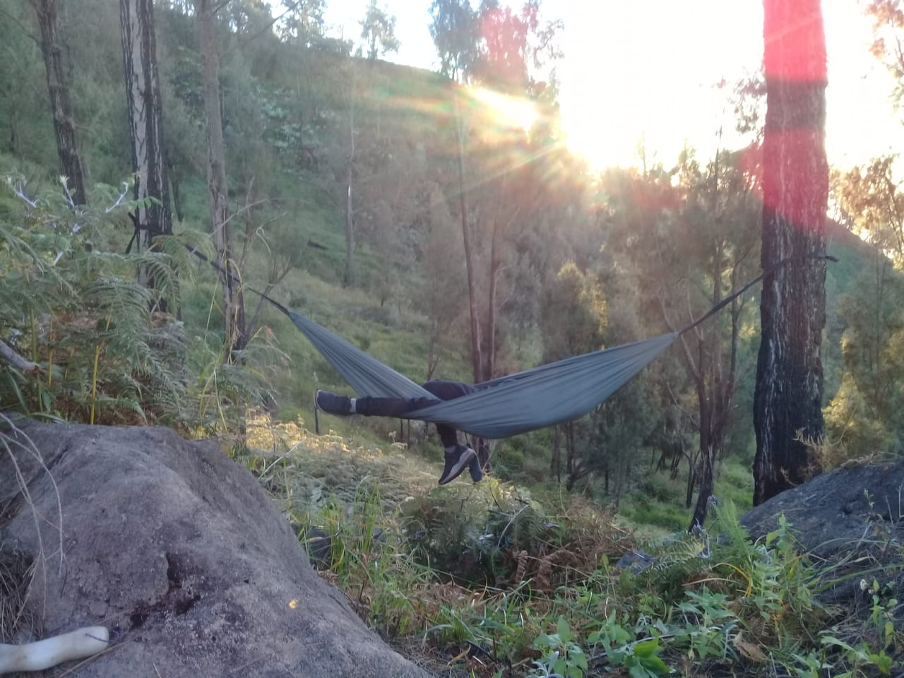
Pos 4 Gombes - Plawangan (1 Jam 30 Menit)
Selepas Pos 4, jalan kembali menanjak dan akan melewati Alas Lali Jiwo. Di sepanjang jalur, vegetasi berupa hutan lumut yang rapat dan lebat. Trek masih berupa tanah keras di jalan setapak sempit. Di sepanjang perjalanan menuju Plawangan, ada beberapa tempat datar yang bisa digunakan untuk camp. Beberapa tempat yang sempit bisa menampung 1 tenda isi 4, itupuk sedikit memaksa. Namun, bisa menjadi alternatif camp darurat.
Memasuki hutan cemara menandakan sudah dekat ke Plawangan. Plawangan adalah pertemuan jalur pendakian Gunung Arjuno via Lawang dengan Pendakian Gunung Arjuno via Purwosari. Plawangan tepat berada di lereng Gunung Arjuno, sehingga tidak banyak tempat datar di tempat ini. Ada lokasi datar di atas Plawangan yang bisa digunakan untuk beristirahat atau membuat 1 tenda isi 3.
Plawangan - Puncak Arjuno (1 Jam)
Dari Plawangan ke puncak Gunung Arjuno, jalur sudah tidak terlalu menanjak dan mulai terbuka dengan pepohonan cantigi yang mendominasi area. Pendakian dilanjutkan dengan memutari lereng Gunung Arjuno hingga sampai di area bebatuan yang menampakkan Puncak Ogal Agil. Tidak dibutuhkan waktu lama untuk menapaki bebatuan besar menuju Puncak Gunung Arjuno.
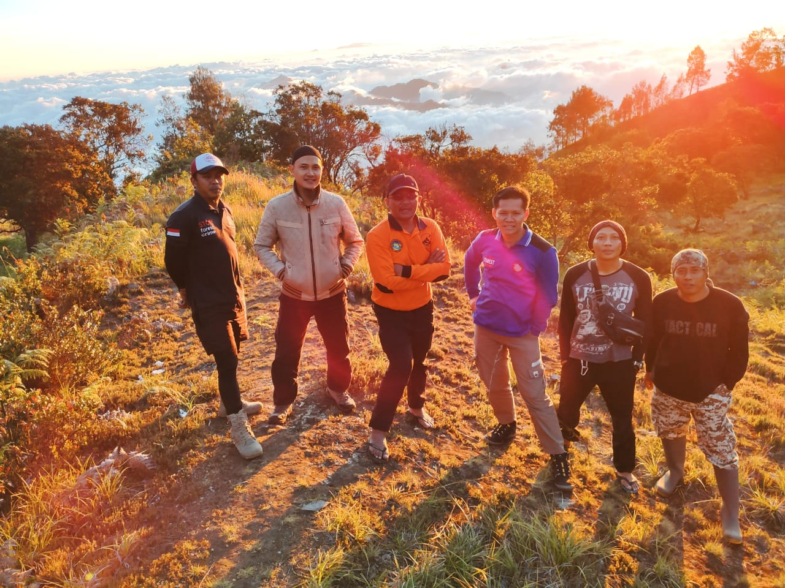

Tips Pendakian Gunung Arjuno via Lawang :
- Gunakan Peralatan dan Perlengkapan Mendaki Gunung yang lengkap untuk kenyamanan dan keamanan.
- Bawalah persediaan air yang cukup karena di sepanjang jalur nyaris tidak ada sumber air dan trek sangat menanjak.
- Dari basecamp ke Pos 1 bisa numpang di truk pengangkut teh, jika beruntung.
- Sebaiknya tidak memulai pendakian malam hari di area kebun teh jika tidak hafal jalur.
- Dikenal sebagai gunung yang sakral, hargai mitos-mitos seperti tidak boleh ganjil, menggunakan baju merah dan wanita yang sedang berhalangan (menstruasi) dilarang melakukan pendakian.
Sumber :
- http://infopendaki.com/pendakian-gunung-arjuno-jalur-lawang/
- https://www.manusialembah.com/2016/11/pendakian-gunung-arjuno-via-lawang.html/